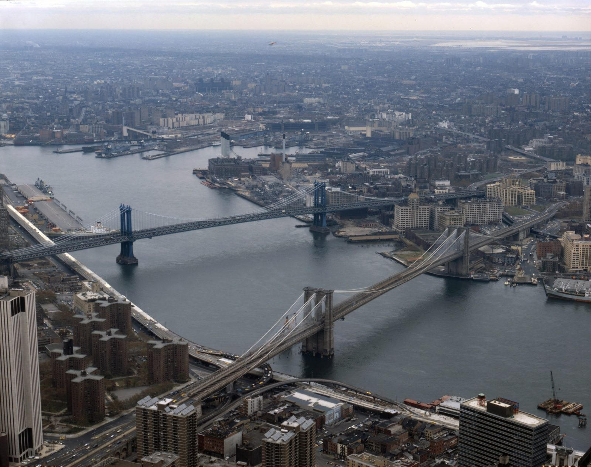
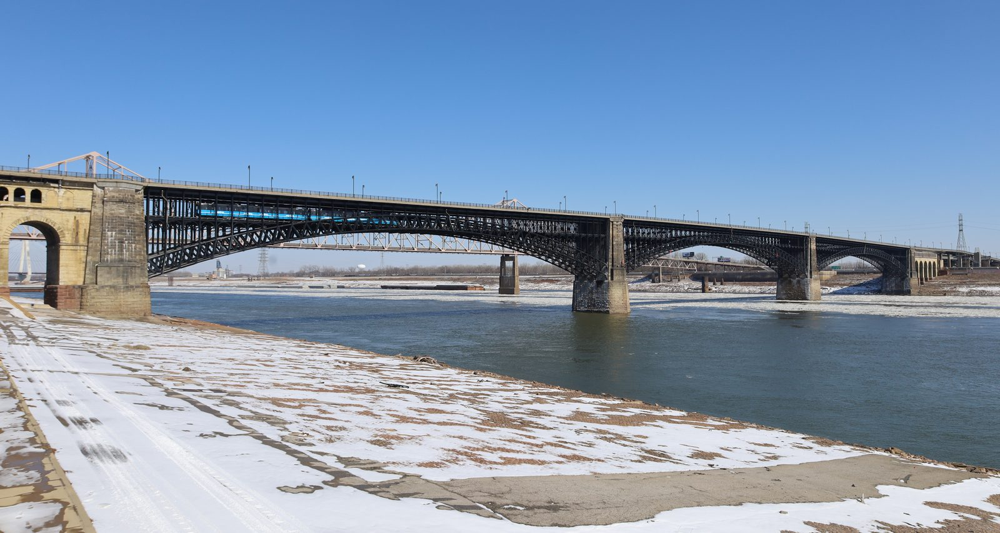
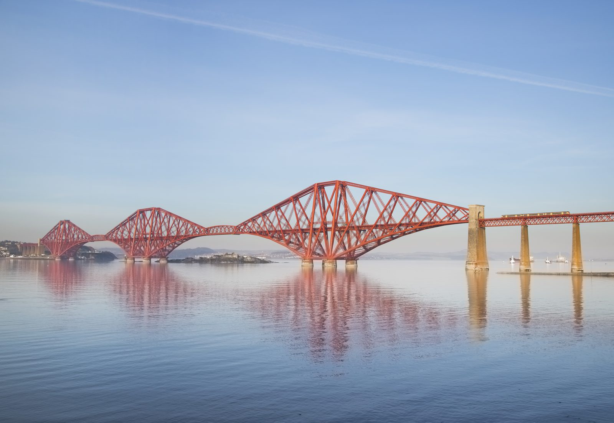
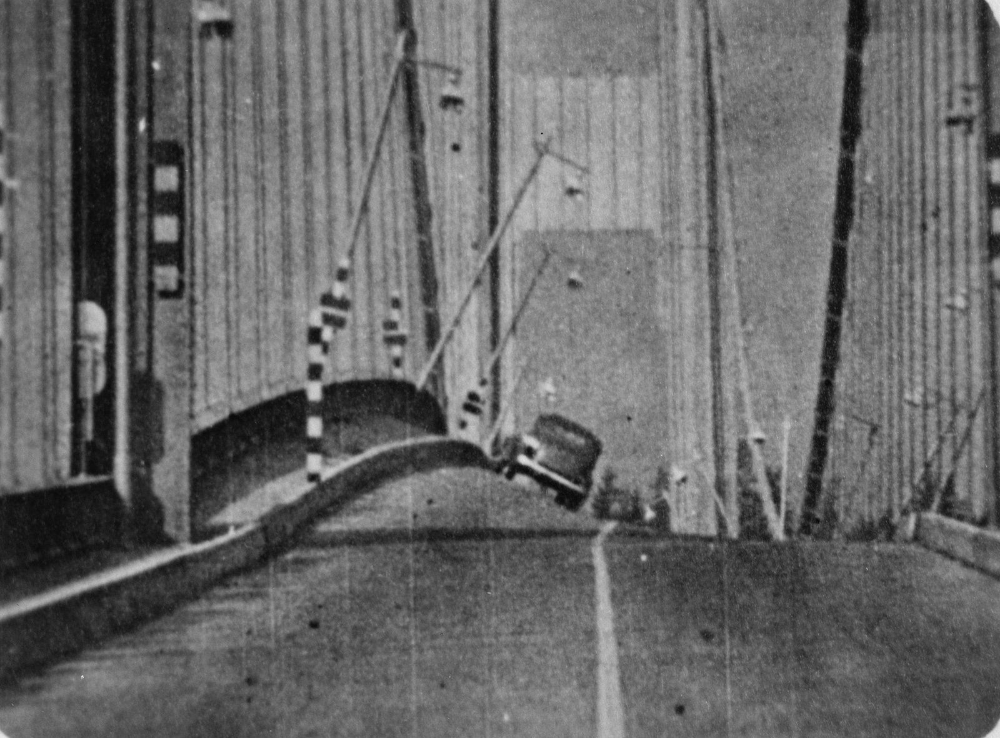
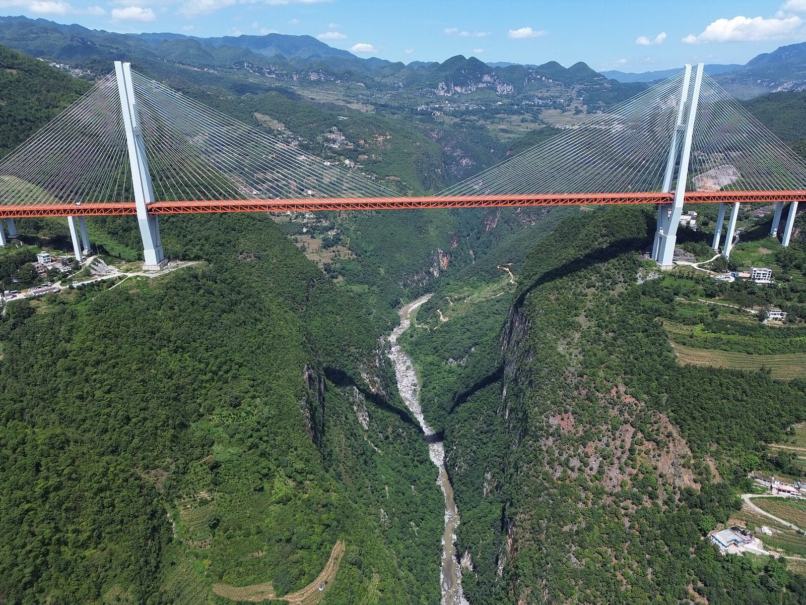

Great bridges
Every great bridge solves the same problem in a different way: crossing a gap where nothing can be propped up in the middle. Suspension bridges hang the deck from cables. The Brooklyn Bridge (1870–1883) set its towers down with men digging inside compressed-air caissons; the Golden Gate (1933–1937) spun on site the cables of the longest suspension span in the world, 1,280 m; the Hercílio Luz, in Florianópolis, hung its span over the sea from chains of steel eyebars.
Tacoma Narrows shows the other side: it opened in July 1940 with a girder only 2.4 m deep and fell four months later, in a wind of 68 km/h. The Forth Bridge (1882–1890) was born right after another Scottish bridge collapsed in a storm, and answered with steel cantilevers. The Eads Bridge, over the Mississippi, gambled on arches made of a metal that had never been the main material of a large structure.
In Brazil, the Rio–Niterói Bridge crossed Guanabara Bay with more than 13 km of bridge and a central steel span of 300 m. In China, Duge set its deck 565 m above a river and was the highest bridge in the world from 2016 to 2025. Each page has the structure's fact sheet, with the confidence level of every number.
Structures on this topic
-

Rio–Niterói Bridge
Guanabara Bay, between Rio de Janeiro and Niterói, Brazil · 1969–1974How the Rio–Niterói Bridge was built: more than 13 km over Guanabara Bay, a steel span between ships and planes, and a death toll that never added up.
BrazilRead the story → -

Brooklyn Bridge
East River, between Manhattan and Brooklyn, New York, United States · 1870–1883How the Brooklyn Bridge was raised (1870–1883): compressed-air caissons, the illness they caused, Roebling's window and the bad wire in the cables.
WorldRead the story → -

Hercílio Luz Bridge
Strait between Santa Catarina Island and the mainland, Florianópolis, Santa Catarina, Brazil · 1922–1926How Florianópolis got the Hercílio Luz Bridge, an eyebar-chain suspension bridge, in 1926, why it was closed for 28 years and what it took to reopen it.
BrazilRead the story → -

Golden Gate Bridge
Golden Gate strait, between San Francisco and Marin County, California, United States · 1933–1937How San Francisco built the Golden Gate between 1933 and 1937: the south tower in open sea, cables spun on site, the 11 dead and who really did the math.
WorldRead the story → -

Eads Bridge
Mississippi River, between St. Louis, Missouri, and East St. Louis, Illinois, United States · 1867–1874How a man with no engineering degree built the steel-arched Eads Bridge over the Mississippi in 1874, and the cost of digging to bedrock in compressed air.
WorldRead the story → -

Forth Bridge
Firth of Forth, between South Queensferry (Edinburgh) and North Queensferry (Fife), Scotland, United Kingdom · 1882–1890How the Tay Bridge collapse gave rise to the Forth Bridge, the 1890 steel cantilever, and why its dead were only named a century later.
WorldRead the story → -

Tacoma Narrows Bridge
The Tacoma Narrows strait, between Tacoma and the Kitsap Peninsula, Washington, United States · 1938–1940The Tacoma Narrows Bridge opened in July 1940 and fell four months later in a 68 km/h wind. Why the resonance explanation does not hold up.
WorldRead the story → -

Duge Bridge
Border between Duge, in Shuicheng District, Liupanshui, Guizhou Province, and Puli, in Xuanwei, Yunnan Province, China · 2013–2016How China set the Duge Bridge 565 meters above a river on the Guizhou–Yunnan border, and why the world's highest bridge for nine years is cable-stayed.
WorldRead the story →


Other topics
The structures grouped by the problem they solved: bridges, skyscrapers, tunnels, stadiums, water.